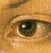

He cannot see beyond his own nose. Even the fingers he out-stretches from it to the world are (as I shall suggest) often invisible to him.
— Max Beerbohm (1872–1956), of George Bernard Shaw
 Time to say what “in scope” means. This definition is one of the most important rules of play, because it decides what the player is allowed to refer to. You can investigate this experimentally by compiling any game with the debugging suite of verbs included (see §7) and typing “scope” in interesting places. “In scope” roughly means “the compass directions, what you're carrying and what you can see”. It exactly means this:
thedark (by default there are no such contents, but
some designers have been known to move objects into thedark:
see ‘Ruins’);container, then that
container;with the proviso that the InScope entry
point (see below) can add to or replace these rules, if you write one.
It's significant that rule (3) doesn't just say “whatever is in the current location”. For instance, if the player is in a closed cupboard in the Stores Room, then rule (3) means that the contents of the cupboard are in scope, but other items in the Stores Room are not.
Even in darkness the player's possessions are in scope, so the player can still turn on a lamp being carried. On the other hand, a player who puts the lamp on the ground and turns it off then loses the ability to turn it back on again, because it is out of scope. This can be changed; see below.
▲ Compass directions make sense as things as well as directions, and they respond to names like “the south wall” and “the floor” as well as “south” and “down”.
▲
The concealed attribute only hides objects from room
descriptions, and doesn't remove them from scope. If you want things
to be unreferrable-to, put them somewhere else!
▲
The small print: 1. For “player”, read “actor”.
Thus “dwarf, drop sword” will be accepted if the dwarf can
see the sword even if the player can't. 2. Scope varies depending on
the token being parsed: for the multi-
tokens, compass directions are not in scope; for
multiexcept the other
object isn't in scope; for multiinside
only the contents of the other object are in scope.
· · · · ·
Two library routines enable you to see what's in scope
and what isn't. The first, TestScope(obj, actor), simply
returns true or false according to whether
or not obj is in scope. The second is
LoopOverScope(routine, actor) and calls the given routine
for each object in scope. In each case the actor given
is optional, and if it's omitted, scope is worked out for the player
as usual.
•
EXERCISE 97
Implement the debugging suite's “scope” verb, which lists
all the objects currently in scope.
•
EXERCISE 98
Write a “megalook” verb, which looks around and examines
everything in scope except the walls, floor and ceiling.
· · · · ·
Formally, scope determines what you can talk about,
which usually means what you can see or hear. But what can you touch?
Suppose a locked chest is inside a sealed glass cabinet. The Inform parser
will allow the command “unlock chest with key” and generate
the appropriate action, <Unlock chest key>,
because the chest is in scope, so the command at least makes sense.
But it's impossible to carry out, because the player
can't reach through the solid glass. So the library's routine for handling
the Unlock action needs to enforce this. The library does
this using a stricter rule called “touchability”. The
rule is that you can touch anything in scope unless there's a closed
container between you and it. This applies either if
you're in the container, or if it is.
Some purely visual actions, such as Examine
or LookUnder, don't require touchability. But most actions
are tactile, and so are many actions created by designers. If you
want to make your own action routines enforce touchability, you can
call the library routine ObjectIsUntouchable(obj). This
either returns false and prints nothing if there's no
problem in touching obj, or
returns true and
prints a suitable message, such as “The solid glass cabinet is
in the way.” Thus, the first line of many of the library's
action routines is:
if (ObjectIsUntouchable(noun)) return;
You can also call ObjectIsUntouchable(obj, true)
to simply return true or false, printing nothing,
if you'd rather provide your own failure message.
· · · · ·
The rest of this section is about how to change the scope rules. As usual with Inform, you can change them globally, but it's more efficient and safer to work locally. To take a typical example: how do we allow the player to ask questions like the traditional “what is a grue”? The “grue” part ought to be parsed as if it were a noun, so that we could distinguish between, say, a “garden grue” and a “wild grue”. So it isn't good enough to look only at a single word. Here is one solution:
[ QuerySub;
noun.description(); return;
];
[ QueryTopic;
switch (scope_stage) {
1: rfalse;
2: ScopeWithin(questions); rtrue;
3: "At the moment, even the simplest questions confuse you.";
}
];
Object questions;
where the actual questions at any time are the current
children of the questions object, like so:
Object -> "long count"
with name 'long' 'count',
description "The Long Count is the great Mayan cycle of
time, which began in 3114 BC and will finish with
the world's end in 2012 AD.";
(which might be helpful in ‘Ruins’) and we also have a grammar line:
Verb 'what' * 'is'/'was' scope=QueryTopic -> Query;
The individual questions have short names so that
the parser might be able to say “Which do you mean, the long count
or the short count?” if the player asked “what is the
count”. (As it stands this won't recognise “what is the
count?”. Conventionally players are supposed not to type question
marks or quotes in their commands. To allow this one could always add
'count?' as one of the names above.)
· · · · ·
Here is the specification. When the parser reaches
scope=Whatever, it
calls the Whatever routine with the variable scope_stage
set to 1. The routine should return true if it is prepared
to allow multiple objects to be accepted here, and false
otherwise. (In the example, as we don't want “what is
everything” to list all the questions and answers in the game,
we return false.)
A little later the parser calls Whatever
again with scope_stage now set to 2. Whatever
is then obliged to tell the parser which objects are to be in scope.
It can call two parser routines to do this:
ScopeWithin(obj)
which puts everything inside obj, but
not obj itself, into scope, and then works through rules
(6) and (7) above, so that it may continue to add the contents of
the contents, and so on; and
PlaceInScope(obj)
which puts just obj into scope. It is
perfectly legal to declare something in scope that “would have been
in scope anyway”: or something which is in a different room
altogether from the actor concerned, say at the other end of a
telephone line. The scope routine Whatever should then
return false if the nominated items are additional to the
usual scope, or true if they are the only items in scope.
(In the example, QueryTopic returns true because
it wants the only items in scope to be its question topics, not the
usual miscellany near the player.)
This is fine if the token is correctly parsed. If
not, the parser may choose to ask the token routine to print a suitable
error message, by calling Whatever with scope_stage
set to 3. (In the example, this will happen if the player types
“what is the lgon count”, and QueryTopic
replies “At the moment, even the simplest questions confuse you.”,
because it comes from a faintly dream-like game called ‘Balances’.)
•
EXERCISE 99
Write a token which puts everything in scope, so that you could have
a debugging “purloin” which could take anything, regardless
of where it was and the rules applying to it.
· · · · ·
▲
The global scope rules can be tampered with by providing an entry
point routine called InScope(actor), where actor
is the actor whose scope is worked out. In effect, this defines
the “ordinary” scope by making calls to ScopeWithin
and PlaceInScope, then returning true or
false, exactly as if it were a scope token at stage 2.
For instance, here as promised is how to change the rule that “things
you've just dropped disappear in the dark”:
[ InScope person i;
if (person == player && location == thedark)
objectloop (i in parent(player))
if (i has moved) PlaceInScope(i);
rfalse;
];
With this routine added, objects near the player in a dark room are in scope only if they have moved (that is, have been held by the player in the past), and even then are in scope only to the player, not to anyone else.
▲
The token scope=‹Routine›
takes precedence over InScope, which will only be reached
if the routine returns false to signify “carry on”.
▲▲
There are seven reasons why InScope might be being called;
the scope_reason variable is set to the current one:
PARSING_REASONaction_to_be holds
NULL in the early stages (before the verb has been decided)
and later on the action which would result from a successful match.TALKING_REASONEACHTURN_REASONeach_turn routines for anything nearby,
at the end of each turn.REACT_BEFORE_REASONreact_before.REACT_AFTER_REASONreact_after.TESTSCOPE_REASONTestScope.LOOPOVERSCOPE_REASONLoopOverScope.•▲▲
EXERCISE 100
Construct a long room divided by a glass window. Room descriptions on
either side should describe what's in view on the other; the window
should be possible to look through; objects on the far side should
be in scope, but not manipulable.
•▲▲
EXERCISE 101
Code the following puzzle. In an initially dark room there is a light
switch. Provided you've seen the switch at some time in the past, you
can turn it on and off – but before you've ever seen it, you
can't. Inside the room is nothing you can see, but you can hear the
distinctive sound of a dwarf breathing. If you tell this dwarf to turn
the light on, he will.
· · · · ·
Each object has the ability to drag other objects into
scope whenever it is in scope. This is especially useful for giving
objects component parts: e.g., giving a washing-machine a temperature
dial. (The dial can't be a child object because that would throw it
in with the clothes: and it ought to be attached to the machine
in case the machine is moved from place to place.) For this purpose,
the property add_to_scope may contain a list of objects
to add.
▲
Alternatively, it may contain a routine. This routine can then call
AddToScope(x) to add any object x to scope.
It may not, however, call ScopeWithin or any other scoping
routines.
▲▲
Scope addition does not occur for an object moved into scope
by an explicit call to PlaceInScope, since this must
allow complete freedom in scope selections. But it does happen when
objects are moved in scope by calls to ScopeWithin(domain).
•
EXERCISE 102
(From the tiny example game ‘A Nasal Twinge’.) Give the
player a nose, which is always in scope and can be held, reducing
the player's carrying capacity.
•
EXERCISE 103
(Likewise.) Create a portable sterilising machine, with a “go”
button, a top which things can be put on and an inside to hold objects
for sterilisation. Thus it is a container, a supporter and a possessor
of sub-objects all at once.
•▲▲
EXERCISE 104
Create a red sticky label which the player can affix to any object in
the game. (Hint: use InScope, not add_to_scope.)
•
REFERENCES
‘Balances’ uses scope = ‹routine›
tokens for legible spells and memorised spells.
•Jesse Burneko's library extension
"Info.h" is a helpful model to follow: using a
simple scope token, it allows for “consult” and “ask”
commands to access topics which are provided as objects.
•See also the exercises at the
end of §18 for further scope trickery.
•Similarly, L. Ross Raszewski's
"whatis.h" (adapted to Inform 6 by Andrew C. Murie)
and David Cornelson's "whowhat.h" field questions
such as “what is…” and “who is…”.